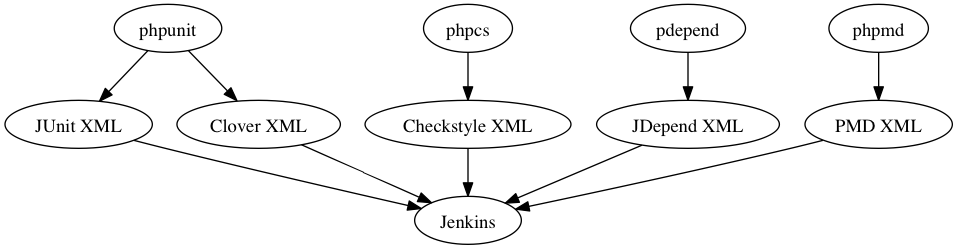

Unit Testing¶
What is a Unit Test?¶
In computer programming, unit testing is a method by which individual units of source code are tested to determine if they are fit for use. A unit is the smallest testable part of an application.
The PHP Quality Assurance Toolchain¶
Here is an overview of what tools we need to install:
- PHPUnit is a unit testing software framework for the programming language PHP. PHPUnit was created with the view that the sooner you detect your code mistakes, the quicker you can fix them. Itself, PHPUnit is the de-facto standard for the unit testing of PHP code.
- PHP_CodeSniffer is the most commonly used tool for static analysis of PHP code. It is typically used to detect violations of code formatting standards but also sup- ports software metrics as well as the detection of potential defects.
- phpcpd (PHP Copy/Paste Detector) searches for duplicated code in a PHP project.
- PHP_Depend is a tool for static code analysis of PHP code that is inspired by JDepend.
- phpmd (PHP Mess Detector) allows the definition of rules that operate on the raw data collected by PHP_Depend.
- phploc measures the scope of a PHP project by, among other metrics, means of different forms of the Lines of Code (LOC) software metric.
- PHP_CodeBrowser is a report generator that takes the XML output of the afore- mentioned tools as well as the sourcecode of the project as its input.
- Although it is currently being replaced by more modern tools such as phpdox, we will use PHPDocumentor for automated API documentation generation for PHP code.
The graphic bellow shows what tool generates what reports and how they get aggregated within Jenkins eventually (or Cruise Control as an alternative tool).

Configure the environment¶
EXT:phpunit is installed from the repository:
cd typo3conf/ext svn co https://svn.typo3.org/TYPO3v4/Extensions/phpunit/trunk phpunit
A patch needs to be applied in order to improve the Code Coverage:
# Download patch form http://forge.typo3.org/issues/33842 into EXT:phpunit patch -p0 < bug_33842.diff
Make sure a BE User “_cli_phpunit” is created
build.xml is added and personalized along with build/phpcs.xml and build/phpmd.xml
A core is defined:
mkdir /t3core/typo3_src-4.5.11 (without git) cd /t3core/typo3_src.git git fetch --tags git checkout TYPO3_4-5-11; git submodule update ./git-archive-all.sh && tar -xf typo3_src.git.tar -C /t3core/typo3_src-4.5.11 && rm typo3_sr.git.tar
Output generated¶
Jenkins is the tool for managing a continuous integration. Basically, Jenkins takes care of fetching the source code, running the metrics tools and generating report from that. Every extension has its own job within Jenkins. A typical view of a job is:

- 1 Coding Guide Line report generated by PHP_CodeSniffer
- 2 PHP Mess Detector report generated by phpmd
- 3 Unit Test coverage of the source code generated by PHPUnit
- 4 API Documentation generated by PHPDocumentor
- 5 Code Browser Tool generated by by PHP_CodeBrowser
More charts are generated for a better insight of the trends.
Coding Guide Lines evolution
the Mess Detection evolution

Copy Paste Detector
Unit Test Coverage metrics

Synoptic information of CGL, PMD, CPD